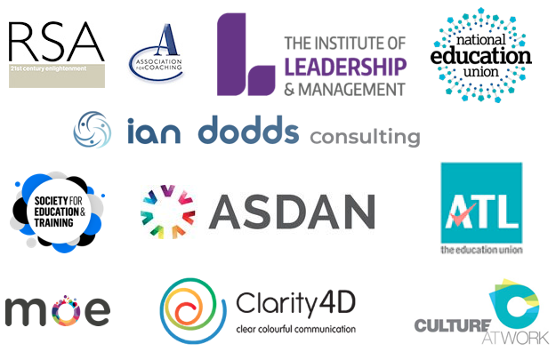

Coach, Trainer, Educator, Facilitator, Mentor, Creator, Solution-Focused Thinker
Talmud has taught and delivered highly successful educational development programmes in primary, secondary, further, higher and adult education, as well as alternative education and community settings for the past twenty-two years.
Talmud trained in Brief Therapy with Children & Adolescents at Institute of Education and spent two years training in counselling skills at LESOCO.
Talmud is a qualified further and adult education teacher and educationalist, youth engagement specialist, ASDAN assessor and centre co-ordinator and coach certified and accredited by The Institute of Leadership and Management, The Association for Coaching, Coaching Culture at Work, The Ministry of Entrepreneurship, Clarity 4D and Dr Ian Dodds Consulting.
Talmud is a member of the Institute of Leadership and Management (ILM), a fellow of the Royal Society of Arts (RSA), a member of the Society for Education and Training (SET), the Association of Teachers and Lecturers (ATL)/The National Education Union (NEU).
Talmud has been a consultant on the impact of developing healthy mind sets and understanding micro – inequities to the Directorate of Education for Greenwich, international NGO’s and charity directors, as well as corporate partners in KPMG.
Talmud is currently Head of Service Delivery at The Jimmy Mizen Foundation.
As a consultant to The George Soros Foundations/ The Open Society Foundations (OSF) he ran presentations, seminars and trainings on learning through creativity, learning and development; intergenerational relationships, solution focused thinking, the ’causes and cures’ of confrontation, unconscious bias and conflict resolution at The Danish Institute for Human Rights, as well as Amsterdam, Rotterdam, Gouda, The Hague, Barcelona, Turkey, Central Asia, Budapest, Romania, Bulgaria, Brussels and The John Jay University of Criminal Justice in New York.
{kind=link}
Talmud has consulted on GRE (Global Responsibility Education) based on the 17 UN Sustainable Development Goals in Bulgaria.
Talmud designed and launched an international toolkit for stop and search and engagement with diverse communities, in partnership with The International Debate Education Association Netherlands (IDEA NL) and The Open Society Foundations (OSF).
Talmud has been a consultant to the Education Team at City Hall and has run seminars at the European Commission and the European Parliament on debate education and emotional intelligence.
Talmud co –designed and delivered The Jimmy Mizen Foundation’s Safe Havens outreach and community education programme.
Talmud was the associate director for Second Wave an interdisciplinary youth arts education organisation for seven years, where he co –created a stop and search engagement model and new recruit training mechanism, in partnership with the London Metropolitan Police Service: Lewisham.
He was also a course writer and reviewer for the LOCN (London Open College Network) and a consultant to The London Mayor’s Office and NHS/CAMHS, on the emotional triggers to youth violence. Talmud was also a course writer and reviewer for the online training provider TSCTH (The Social Care Training Hub).
Talmud was a visiting lecturer at Ravensbourne University College on Inclusion and Diversity. Talmud also delivered a seminar on BUILDING TRUST & AN EQUAL, MULTI-CULTURAL COMMUNITY: CHALLENGING UNCONCIOUS BIAS, MICRO INEQAUTIES AND ETHNIC PROFILING to delegates from the Netherlands, UNESCO (Paris) and The Centre for African Studies (Netherlands).
Talmud is the Founder and Chief Executive Officer of Quality Interactions and Creativity CIC:
Quality Interactions and Creativity (QIC) is a community interest company (CIC) that trains young people and young adults (16 -30) from diverse backgrounds and experiences to develop and acquire unique skills of creative and solution focused thinking, arts, adaptability, responsiveness, teaching and facilitation; to run sessions with vulnerable children and young people in early years, primary and secondary schools (key stage 1 – 5) PRU’s, alternative provisions, FE, support services. We all also offer crime intervention, mentoring, youth engagement, family support and training services.
Talmud was also premier consultant to IDEA NL (The International Debate Education Association Netherlands) and a HundrED Ambassador: HundrED is a non for profit organisation; which discovers, researches and shares impactful and scalable K12 innovations with the world, for free.
Talmud was the previous Operational Excellence Lead/Assistant Head Teacher for Education My Life Matters CIC an independent school and alternative provision for vulnerable learners.
Talmud is part of a Stop and Search think tank at The House of Commons, convened by Janet Daby MP looking at the disproportionate targeting of BAME males by the police; with an aim to setting up an APPG (All Party Parliamentary Group) to tackle the issue. Talmud is Co – Founder of Evolve Generation, an organisation looking at emotional wellbeing and alternative education.
{kind=link}
Clients
{kind=link}
Vicki Paterson, DBE
Executive Headteacher, Brindishe and Lee Manor Schools
Louis Weinstock
Psychotherapist and Wellbeing Consultant at A Quiet Evolution
Simon Jones
Director of Schools at For Jimmy
Jeremy Philips
Jeremy Philips Consulting
“My vision is to inspire and enhance the quality of interaction of others personally, professionally and emotionally. To enable people to develop efficient, empathetic communicative and interactive skills and foster collaboration and problem solving by using my diverse experience and skill set, my unique perspective and insight, and my belief in the untapped potential, integrity, and limitless capacity of human beings.”
Core values
- To enhance the quality of interactions of people in their personal and professional lives all over the world
- To develop and facilitate the collaborative, interactive and communicative skills of people, in response to their needs and aspirations
- To use a diverse range of experience and skills to improve the learning development and efficiency of a diverse range of people
- To work with and support conflicting groups to develop empathy, understanding and equality
Inspiration
“My intention is to always inspire and uplift. To be responsive and sensitive enough, to offer what is needed on many different levels.”
Management
“Management is about facilitating and providing structures which enable and empower people to manage themselves. To offer support and guidance or advice when your team needs a sounding board, with an aim to encouraging and fostering self direction.”
Potential
“Life is like a book that never closes and never ends and the pages are blank, because it’s for you to fill”.
Creativity
“One of the main components of being a human being is to be creative. We can’t help but be creative. Your mind creates whilst you sleep and when you wake, you start creating the structure of your day. Creativity is transferable undefined conscious energy, that adapts and evolves”.
{kind=link}
Support, Self Confidence and Collaboration
“The journey has to be made and driven by the person. We are but guides and facilitators. We offer options, structures and support. What we are trying to encourage is informed independence, a collaborative point of working and sharing ideas. When you have that informed confidence in what you feel and choose to do, you come to collaborate and share much easier because you are not insecure or precious, about that which you have to offer”.
Knowing Yourself
“It’s important to come freshly to what you do and nurture yourself as a person. That way you come to your work fresh and ready to give, because your needs are already being met”.
Self-Discovery
“As you step into the world it’s an infinite cosmos. It’s the principle of exploration and understanding and its boundless. You learn about yourself through others, learning new things. Each day is a new experience even if you’re going to the same place or working in the same area, each day is a new day. You might wake up a completely different person from the one you were the day before”.
Sensitivity and Responsiveness
“People have a lot of feelings and emotions and we need to be in a place to manage that. Even if people appear to be rude or aggressive in their manner, you’ve got to put them at ease and not get caught up in their emotions. It’s about having emotional investment and emotional distance at the same time, maintaining the boundaries and focus, through your role and purpose”.